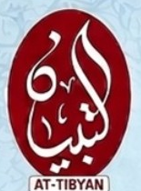

اتوار کا اصلاحی بیان
ہر اتوار نمازِ ظہر کے بعد


لَا إِلٰهَ إِلَّا اللهُ مُحَمَّدٌ رَسُولُ اللهِ
ملیر کینٹ، کراچی
ہر اتوار نمازِ ظہر کے بعد
روزانہ عشاء کے بعد — ترجمہ و تفسیر کے ساتھ، تقریباً 25 سے 30 منٹ
صبح 7:45 سے شام 4:30 تک — جمعہ ہاف ڈے، اتوار چھٹی
دینی تعلیم کا ایک مثالی مرکز، ملیر کینٹ کے محفوظ اور پرسکون ماحول میں۔ بچوں کے لیے پائیدار تعلیمی نظام کا بہترین انتظام موجود ہے۔
نماز کے بعد کے اذکار، قرآنی دعائیں اور نمازِ جنازہ کی دعائیں
سحری اور افطار کے اوقات
مسجد و مدرسہ کی خدمت اور تعلیمی سرگرمیوں میں تعاون کے لیے: